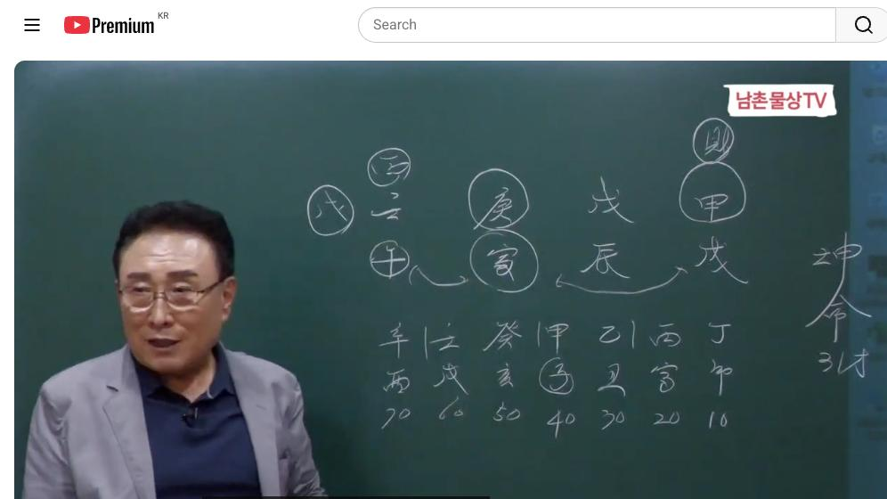

남촌물상TV 전체 문서 › 동영상 V0092
이런 사주 첫 아들 출생하면 빌딩이 따라온다

| 문서 번호 | V0092 (동영상) |
|---|---|
| 영상 URL | https://www.youtube.com/watch?v=rArv21IdGuI |
| 영상 ID | rArv21IdGuI |
| 게시일 | 2024-09-09 |
| 길이 | 26:22 (1582초) |
| 조회수 | 3,427회 (수집 시점 기준) |
| 카테고리 | Howto & Style |
| 자막 | ko (자동생성) |
| 수집 시각 | 2026-08-30 19:08 (KST) |
영상 설명 (YouTube 설명 원문 그대로)
이런 사주 구조 첫 아들 출생하면 빌딩이 생기는 이유 #사주풀이 #첫아들 #사주팔자
전체 자막 (588구간 · 타임스탬프 클릭 시 해당 장면으로 이동)
[0:00]술로 아들을 낳으면 저기 갑목이
[0:07]태양이 어이 사주가 굉장히 이제 좋은
[0:10]사주 같이 여러분 보여서 착각할 것
[0:12]같고 또 때로 가서는 고정하 분들이이
[0:16]천간에 각경 모면 기격 사주라고
[0:18]여러분들이 그렇게 알고 계실 거예요
[0:20]근데 기격 사주도 기격 사주
[0:22]나름이에요 고전에서는 무조건 각경
[0:25]그러면 천간에 있으면이 기격 사주로
[0:27]보통 생각하죠 근데 어 체 있냐요
[0:31]쉽게 얘기해서이 사주가 갑목이 일간이
[0:35]누구 어디에 따라서이 격이 되고 안
[0:37]될 수가 있는 겁니다 각경 다 좋은
[0:39]거예요 참가해 보세요 자 금에 토에
[0:43]목에 물까지 아주 다 있잖아요 그럼
[0:47]뭐 화만 없는 거예요 화는 만들 수가
[0:50]있어 언제든 지제 인술이 돼 있으니까
[0:52]사주가 아주 좋다고 볼 수가 있는
[0:54]거야 사주고 나쁜 좋습니다 좋은데
[0:57]문제는 뭐냐 그러면 경금일주 토일주
[1:01]그다음에 토일 뭐 저 어 임수일 주냐
[1:05]여기에 따라서 격이 대고 한다고
[1:07]합니다 고전에서 무조건 기격 사주라
[1:09]쳐요 근데 기격 사주가 안냅니다 왜
[1:12]그러냐 금일 주라는 것은 본인이 우리
[1:15]물상 칼이에요
[1:16]자기가 칼날 역할을 하기 때문에
[1:19]쉽게해서 어느 누구의 지시를 받고 칼
[1:22]자루가 움직임에 따라서 일을 하는
[1:25]사람밖에 아니에요 그래서 이런
[1:27]사람들은 소위 격에서 한 달리 밑에
[1:29]떨어진 사주가 됩니다 그 여러분이
[1:32]그걸 아셔야 돼요 만약에 얘가 토일
[1:34]주였다면 얼마나 좋았을까요 토 있다면
[1:37]나무 심어서 사업도 할 수 있고 다
[1:39]좋은 거예요 근데 그것이 아니면
[1:43]어렵다 얘기예요 근데 금이라는이이
[1:46]경금이
[1:48]자체가 칼로서 우리 물상 표현하잖아요
[1:52]그러면 여기에서 이제 갑술 무진 경인
[1:57]모인데 칼 차를 누가지고 있어요 라요
[2:00]자 국가 여기지고 있잖아 칼자루를
[2:03]그럼 나 나는 무슨 짓을 해야 돼
[2:05]칼날 역할을 해야 돼 칼이 움직인
[2:07]데로 움직이 때 이건 조직 생월 자야
[2:09]사업가가 아니다 이렇게 금 볼 수
[2:11]있는 거예요 그래서 간단하게 물상
[2:14]해석하는 방법은 여러분들이 어렵게
[2:16]생각하지 그냥 쉽게 볼 수 있잖아요
[2:18]이건 사업과 아니네 금방할 수 있는
[2:21]거예요 왜 나무의 지시를 받아야 되기
[2:24]때문에
[2:26]문제는 자 그래서이 경금 일주가
[2:31]물에서 놀 수 있고 물이 재방 역할을
[2:34]할 수 있고 또 갑목이 칼 자루
[2:36]굉장히 튼튼하 좋다라고 표현하지만
[2:38]이거는 기격 사주고 안 된 이유를
[2:41]내가 일간에 따라서 기격 대구한 할
[2:43]수 있다는 걸 분명히 이해하시고
[2:44]넘어가야 돼요 무조건 아이고 사주 좋
[2:46]켜 돈도 잘 좋습니다
[2:48]아닙니다 내용을 파고 들아서 더 결신
[2:51]해 보라 그 말이에요 그것을 여러분들
[2:54]이해하셔야 사주를 잘보고 정확하게
[2:57]본다 얘기 되는 거 그렇지 않으면 안
[2:58]되는 거예요
[3:01]그러면 경금 일주에 재가 어디
[3:04]있습니까 자 여기에 지금 갑목에 재가
[3:06]있죠 여기 여기 재물이란 말이에 자
[3:09]여기 제가 있으면은 우리가 보편적으로
[3:12]생각할 때 국가 자리에 재물이
[3:13]있다라고 하죠 국가 자리
[3:16]근데 갑목이 술토의 결과적으로 뿌리를
[3:19]내릴 수 있냐 봐 항시 일간 위주로
[3:22]보라이 말이에요 그럼 갑목이 뿌리를
[3:24]내리면 술 진토에 내리기 좋아 술토의
[3:27]내리기 좋아 진 진 초한 땅이 있어야
[3:31]될 거 아닙니까 거기에 내리고 싶다
[3:32]이거예요 그럼
[3:34]결과적으로이 사주가 본인의이 갑목이
[3:38]술토의 심어질까 여기 심어져야 되는
[3:40]거예요 그래서 국가 공직자 못하는
[3:43]거예요 그래서 이거 대기업도 안 된다
[3:45]그 말이에요 쉽게에서 그래서 여러분들
[3:48]이제 그런 관계성을 이해하시면 무조건
[3:50]뭐야 대기업 사주네 뭐 잘되네 이렇게
[3:53]착각을 할 수가 있다 그것을 해야
[3:55]돼요 그니까 어떻게 볼 때는 공이 거
[3:58]공기 사주로 보이기가 야 되죠 한
[4:00]국에서 칼자루를지고이 공격 사주로 볼
[4:03]수도 있는 거예요 근데 이것이 만약에
[4:06]바꿔져 있었다 진토와 술토가 바꿔져
[4:09]있을 경우라면 판단이 달라지는 거예요
[4:11]그 그렇게 세밀하게 구별 해서 볼 줄
[4:14]알아야 되지 무조건 고전게 건달 건달
[4:17]해서 그냥 뭐 무의 땅이니까 좋아
[4:19]이렇게 이런 개념을 여러분들이
[4:21]버리셔야 한다 그 말입니다 이게
[4:23]진했으면 자리예요 그럼 국가
[4:27]대기업입니다
[4:29]근데이 크게 뿌리를 내릴 수 없는
[4:31]거예요 쉽게 얘기해서 그걸 이해하셔야
[4:33]돼요 자
[4:35]그러면이 사주의 그 저 자체가 얼마나
[4:38]좋습니까 여기에 그럼 자 내가 무술
[4:40]있으면 짠돌이라고 맨날 그렇게
[4:41]얘기하는데 이건 짠돌이가 아니에요
[4:44]왜 자이 자리는 내 자리가 아니라
[4:48]여기는 어디예요 부모 자리에 연결 그
[4:51]부모가 결과적 짠 사람이었지 보인
[4:53]본인 별로 아니에요 여기가 막약
[4:56]술토가 여기가 있다 그러면 되는
[4:58]거예요 근데 다 나 위에 있을 때는
[5:02]나의 영역에서 벗어난거다 그 말이에요
[5:04]쉽게 소리는 뭐냐면
[5:07]어어 요즘에 그 행거리 족들이
[5:09]많잖아요 우리 한국 사람 유별나게
[5:12]40대까지도 부모한테 곁드려 사는
[5:14]사람이 많아요 그래서 영역을 40대
[5:17]이전까지는 그래도 부모 영역까지
[5:19]가능한 본다 그 왜 부모 자리니까 그
[5:22]영역까지 보는데 그 이후의 영역은 내
[5:25]영역으로 봐라 해서 구별의 설명을
[5:28]드릴 수 있다고 본다 그 말입니다
[5:30]그러니까 여러분들이 생각할 때이
[5:32]사람은 굉장히 짜다 그건 아니에요 자
[5:35]특성이 있죠 자 그러면이 재물이 지금
[5:38]만드는 자리가 쉽게해서 다 뿌리는
[5:40]내가이 갖고 있죠 재를 깔고 있어요
[5:44]자 재를 깔고 있다는 얘기는 재복이
[5:46]좋네 뭐 할 수도 있고 하죠 그러면이
[5:49]여러분 전체 사주의 여덟 글자 중에서
[5:53]나의이 인목의 뿌리가 어디서 나왔냐
[5:56]그 말이에요 어디서 나왔어요 여기서
[5:58]나왔잖아요 그럼이 뿌리가 나한테 와
[6:02]있는 거예요
[6:03]그러면이 뿌리의 목은 누구 거냐 내
[6:07]친정 거냐 씨야 거냐 이걸 볼 줄
[6:09]알아야 돼요 쉽게 얘기해서 얼 아이고
[6:12]친정이 잘 살고 괜찮았네 이렇게
[6:14]얘기하시면 안 돼 왜 그러냐면이 자리
[6:18]누구
[6:19]자리 남편 자리 아니야 그럼
[6:22]결과적으로이 뿌리는 저 남편의 시집에
[6:24]재물이 있는 것이지 나의 재물이
[6:27]아니다이 말이에요 이런 것을
[6:29]여러분들이 쉽게 구별해서 통할 줄
[6:31]알아야 더 깊이 있는 판단이 된다 그
[6:35]말이에요데 이걸 생각을 않고 무조건
[6:37]보면 아 이거 뭐 재물이 있으니까
[6:39]좋아
[6:40]이것은 솔직히 그냥 입에 버튼을 슬슬
[6:43]넘어가는이 스타일이지 진짜 학문적인
[6:47]체계로서 내가 다룰 수 있고 설명이
[6:49]드릴 수 있는 여건이
[6:57]대죄한국어 재물이 좋아 하고 근데이
[7:01]재물이 누구 재물이냐 구별도 못해
[7:03]물상론 해당이 된다 그 말이야 우리
[7:05]물상
[7:06]론에서 자리에 따라서 교이 선적이 된
[7:09]거예요이 재물이 내 남편 자리야
[7:11]여자의 자리 그 내 남편 자리에 재물
[7:14]뿌리는 어디냐 여기 있다이 말이에요
[7:15]그러면 본래이 집 집안이 씨가 집이
[7:18]잘 산 집안이지만 이해할 수 있는
[7:20]거예요 그래서 너는 결혼하면 잘 살
[7:23]수 있는 사람이구나 할 수 있는
[7:26]거예요 자 이게이 특징이에요 자
[7:28]그러면
[7:31]이 사람이 이제 칼 자루가 여러
[7:33]가지가 있죠 칼자루가 우리 칼 자루가
[7:35]끼어져 있을 때 그럼 이런 사람들이
[7:37]그 제 재물 욕심이 많을까요 안
[7:38]많을까요 많 많아요 자 여기서 이제
[7:43]헷갈릴 수가 있어 경금 일줄은 모조건
[7:46]재물이 많다라고 하지 마라 기본적인
[7:48]재물이 나타나 있는 재물 사람들은
[7:50]그렇게 욕심을 덜 갔습니다 근데 기본
[7:54]재물이 없다 없다 숨겨 있다이 영우는
[7:57]재물 욕심이 강하다고 이해하시면 돼요
[8:01]그러니까 특징이 있어요 드러난
[8:03]재물이란 숨겨진 재물의 구별 차이가
[8:06]있다 드러난 재물은 나타나는 재물이
[8:10]지지에 숨어 있는 재물은 통장의
[8:12]재물이다 이렇게 저 계서 분리해서
[8:14]하시라 그
[8:15]말입니다 그러니까 우리가 은행에 넣
[8:18]돈 보여 안
[8:19]보여 내가 하고 있는 돈 보이죠
[8:22]이것이 차이예요
[8:23]그러니까 은행의 통장에 넣어진 돈은
[8:26]누구도 몰라 왜 은행에서도 안 혀져이
[8:30]아까 지지에 숨어진 제물이요 그럼
[8:33]우리들이 보통 봤을 때 운이 천간에서
[8:35]저저 아 운이 왔다 이거는 실질적인
[8:38]재물에 와도 나한테 실질적인 주머니
[8:41]보따리가 안 들어가는
[8:43]제물이요 지지로 재물이 올 때 이럴
[8:46]때 재물은 뭐야 그거는 통장에 남한테
[8:49]보이지 않는 재물이 통장의 재물로
[8:51]설명하시면 된다 그
[8:53]말입니다 그러니까 여러분들 가까
[8:55]보시면 뭐 이런 거 안 나왔지만 어
[8:58]막 이런 재물 있잖아요
[9:00]안인 재물 뭐 이게 막 없다고 했을
[9:03]때 그럴 경우는 이거 재물이 밑에
[9:05]있으면 괜찮아요 이게 나타난 재물
[9:07]있죠 이게 나타난 재물 이거는 나타난
[9:12]재물은 실질적인 결과적이 사람은 사주
[9:15]뿌리가 있으니까 그러지만 만약에
[9:17]뿌리가 없다 나타난 재물이 이건
[9:19]실질적 돈 돈을 많이 돈 버는 거
[9:21]아니에요 허울만 좋 그 상이 되는
[9:24]것이지 내실이 없다 그 말이에요 그게
[9:28]사주 보실 때 그런 것도 여러 가지로
[9:30]참고로 여러분들이 그 해 줘야지 그냥
[9:33]무조건 아이고 재물이 갔어요 좋아요
[9:36]뿌리없는 재물은 무 필요 없어 재물도
[9:40]뿌리가 존재한 재물 같으면 좋다 그
[9:42]말입니다 그러면 자이 사람이 막
[9:44]여기다 재물이 왔다 내 뿌리 갖고
[9:46]있잖아요 그럼 이거는 알진 제물이요
[9:49]그리고 지지에 지지에 자가 온다는
[9:52]얘기는 뭘까요 자가 온다 항시이
[9:56]경금은 밑에 뿌리가 신금이 있다고
[9:58]이해하라고 그랬죠 그 신자이 되잖아요
[10:01]그러면 자 이때 재물이 수생으로 가죠
[10:05]그럼 재물이 커 안 커 크다 이렇게
[10:07]구별하시는 그
[10:09]말이에요 자 나무가 성장할 수 있는
[10:12]것은 무리에 성장될 거 아닙니까
[10:15]그래서 여기 천간의 개념을 그 고지는
[10:18]이런 거 안 쓰죠 우리 물상론 그래는
[10:20]여기에 경금이 있으면 밑에 저 신자진
[10:23]우리 가지고 있는 거예요 신금이
[10:25]있다고 보시면 돼요 그럼 뿌리가
[10:27]있어야 돼 그러면 자 럴 때 이제
[10:29]뿌리를 찾는 거예
[10:30]여기에 자수가 올 때 진토와 자수가
[10:34]신자진 된다 이렇게 할 수 있는
[10:35]거예요 수가 있다고 보는 금방 알아요
[10:38]그러면 자 물이 생산이 되면은 어디로
[10:41]그 물이 가냐 그 목으로 갈 거
[10:43]아니에요 자 이렇게 이해하시면 돼요
[10:45]그러면 이때 재물은 괜찮은 재물이
[10:47]되는거다 자 이렇게 하시면 돼요 자
[10:50]그다음에이 사람이 이제이 사주 인술로
[10:53]돼 있잖아요 그렇죠 이렇게 지지로
[10:55]술이 돼 있어요
[10:57]이렇게 그럼 자 술이 돼 있다는
[11:00]얘기는 어떤 얘기일까 잘 보세요 어
[11:04]우리가 이제 자식을 날 때 자 당신
[11:07]쳐다 낳겠네 딸 낳겠네 이런 걸
[11:10]얘기를 하잖아요 그것이 보면이 사람이
[11:12]사람은 노을로 관이 아들이죠 여자니까
[11:16]그러면 인이 움직이면 저
[11:19]호수이며 그러면 어떤 것이 나올까요
[11:22]노수리 움직인다는 얘기는이이 갑목이
[11:26]뿌리가 있으니까 갑목이 요리 온다는
[11:28]얘기야 그렇죠 뭔 얘기 하시겠죠
[11:30]그러니까 여러분 어른 이제 보시면
[11:32]옷을 하니까 아 태양이 어디 떠요
[11:35]어디
[11:37]떠요 자 우리가 할 때 뭐라 랬어요
[11:39]그 병화는 어디 뜨기를 좋아해 임수
[11:42]임수의 뜨기를 좋아하잖아 여기에 뜰
[11:45]아니에요
[11:46]그렇잖아요 여기에 뜨니까 중심의
[11:49]핵심이 우리가 자오묘이
[11:52]우이이 전부 다 중간에 오묘 자오묘이
[11:55]형태가 중심이죠 그럼 목의 중심이
[11:59]요리 오는 거예요
[12:00]그죠 그러면 인목이 중심이 온다는
[12:02]얘기는 저 갑목이 움직이라 얘기예요
[12:05]그럼 태양에서 태양이 뜨고 갑목이
[12:08]호수위 된다는 얘기는 항시 이글 씨가
[12:10]움직이면 저게 또 움직여 이렇게
[12:12]이해하시면 돼요 그럼 목이 오죠 자
[12:15]그러면이 사람이
[12:16]이노로 아들을 낳으면 저기 갑목이
[12:20]태양이 뜨고 갑목이 나한테 오는거다
[12:23]이렇게 이해하시면 자식을 아들을 낳고
[12:25]나면 시모가 제사를 큰 나 줄 것이다
[12:28]이렇게이 하시면 된다 그
[12:31]말이에요 그래서이 사주 근본주 핵심은
[12:35]자식이 아들을이 사람이 아들을 낳게
[12:37]되면 큰 재물이 음으로부터 오는
[12:41]사주가 된다 그 말입니다 이게 이제
[12:43]핵심이에요
[12:44]그러니까 그 여러분들이 사주 보실 때
[12:48]표현하는 방법이라든가 여러 가지 봤을
[12:50]때 그 여러 그 어 표현하는 방법이
[12:53]얼마든지 여러분들 표현력이 좋잖아
[12:56]거기다 말을 더 붙여서 더 구성지게
[12:58]재밌고 더 실감나게 하는 건 여러분의
[13:01]몫이야 저는 교육 입장이기 때문에 뭐
[13:03]구성진 얘기도 할 수도 없는 것이고
[13:05]또 현실적인 것만 가지고 설명을
[13:07]드리기 때문에 살을 붙이는 건
[13:09]여러분이 붙여라 그 말이에요 그래서
[13:11]우리 물상론 자체라는 것은 핵심과
[13:14]가장 쉬운 방법을 찾아서 설명하기
[13:16]때문에 정확하게 답을 줄 수가 있고
[13:19]현실에 맞는 답을 정하게 해 줄 수
[13:21]있다이 말이에요 자 그러면은 자
[13:24]봅시다 우리 물상론 해석하자면
[13:28]하자면 무토가 여기 여기 여기 막어
[13:30]주고 있겠죠 그렇죠
[13:34]무토가 무토가 우리 임수를 재방 역할
[13:37]막어 주고 있다이 말이에요 그러면 자
[13:41]뭐가 심어질까요 자 나무가 심어질 거
[13:44]아닙니까 그러면 물을 쳐저 재산이
[13:47]언젠가는 요리 다 오잖아요 그 시부모
[13:50]재산이 다이 사람한테 오게 돼 있어요
[13:53]근데 내가이 사람을 상담하다 보니까
[13:55]그저 남편이
[13:59]어 근데 내가 더 둘째지 그랬더니
[14:02]둘째라 그 말이야 근데 부인 사주
[14:05]복이 좋으면 역세 역시 쌍둥이 둘째
[14:09]애들이 잘 돼요 그러니까 저희가 볼
[14:11]때는 둘째는 거의 평상 개념으로 봤
[14:14]때이 둘째 애들이 다 그 쌍둥이 잘
[14:16]돼요 그러면이 사주가 좋은 좋은
[14:19]남편으로 살잖아 이해가 좋다는 얘기는
[14:22]남편이 복이 있다 얘기 그래 그 둘째
[14:24]둘째라 말이야 맞아요 올트라 그래서
[14:27]이제 타고난이 사주를 가지고 움직이
[14:29]다 자 그래서 그러면 여기 만약에
[14:33]무터 오면 저 갑목이 심을까 심을까요
[14:35]심어질 거 아니에요 그러면이 사람은
[14:38]전부 시가지 재물이 다 자게 도는
[14:41]거예요 아들을 낳아야 돼 그대이
[14:43]그러니까 우리도 이제 아들을 날 거냐
[14:46]딸을 낳 거냐 이런 것도 여러 가지
[14:48]하는데에 그 사실상 보시면 그 그
[14:52]시간 개념이 굉장히
[14:54]중요하죠이 사람이 실을 잘 타고나요
[14:57]임오일주 실을 잘 타고났다
[15:00]근데이 사람이 실을 잘못하면 안 돼
[15:03]아무리 원국이 좋아도 실을 잘못
[15:06]하고라면 자식에 대한 고통을 따를
[15:09]수도 있는 거예요 내가 언젠가 그
[15:12]사주도 자식에 대한 가지고 그 어어
[15:15]어 장애인 사주 나온다 그랬죠 옛날
[15:18]옛날은 프 사주 있었어요 그게 탁수의
[15:21]개념이 올 때 그러 탁수의 개념이 올
[15:22]때 하 그래서 장애인 사주를 그
[15:27]타고난 그기를 난 엄마들을 사주 보면
[15:30]거의 있어요 안돼대 방법이 뭔가를
[15:33]우리 자꾸 제시에 내 보내야죠 그것이
[15:35]그니까 아이 사주의 특성이이 시도 잘
[15:39]타고 놨고 여기서 만 여기까지 다
[15:41]좋다 좋았는데 여기서 잘못될 수도
[15:43]있는 거예요 여기서 실을 잘못 만나
[15:46]버면 결과적으로 자기 대는 괜찮지만
[15:50]자식 나갈 때부터는 안 좋을 수가
[15:52]있다 이렇게 보는 거거든요 그래서
[15:54]어떤 사람은 자식을 낳고이는 사람이
[15:57]있고 자식을 낳 불한 사주가 있어요
[16:00]이건 자식을 나면 재물이 불어난
[16:03]사주다 이렇게 설명을 드릴 수가 있다
[16:05]그 말입니다 자
[16:07]이해하셨죠 자 그러니까이 사주가
[16:10]보면 자 한 눈에 들으셔야 돼
[16:13]여러분들이 이제이 물상 공부한
[16:15]사람들은 뭐 제가 용신을 찾으라고요
[16:18]뭐 격국을 따지라고 그래요 뭐 조우를
[16:20]따지 아무 보지 마라 그냥 자연 순서
[16:23]자연의 인대 자체를 가지고 그냥
[16:25]그대로 설명하면 된다 그
[16:27]말이지 그것이 인간은 세계고 자연은
[16:30]세계예요 자 모든 것은 자 요새
[16:32]우리가 지구의 그 자연을 파괴하 어떤
[16:35]문제가 와요 요새 엘류 난 와서 지금
[16:38]여러 올해 여름에 굉장히 뜨거운
[16:40]세월을 많이 보냈잖아요 지구에
[16:42]온난하고 오고 지구가 파괴되고 있다이
[16:44]말이에요 그래서 이게 다 자연이에요
[16:47]자연이 망가지면 인간도 망가지게 돼
[16:50]있는
[16:51]거예요 그래서 우리는이 그 사상이
[16:56]자연의 개념으로 사주를 보기 때문에
[16:58]가장 현실에 정확하다고 저는 한다 그
[17:01]말이에요 고전으로서 못을 딱 받고
[17:03]얘기를 해 보면은 용신을 정해 놓고
[17:06]보면 안 맞는 이유가 열살대 용신
[17:10]적용과 50대 용신 적용이 틀리거든요
[17:13]왜 우리는 모두 10년 다이로 하고
[17:16]있어요 10년 다위 20년 다이로
[17:19]나눠지지아요 자 병정 갑 을갑 임계
[17:24]다 20년들이 가고 있는데 20년
[17:26]운이 벗어나면 운도 바뀌는 겁니다
[17:29]근데 용신을 딱 정해 놓고 봐보면 안
[17:34]맞는거다 그래서 식의 흐름대로 가야
[17:37]돼요 그래서이 틀을 정해 놓고 보면
[17:40]안 된다 그래서 제가 노자 사 얘기한
[17:43]이유가 도를 도라고 정해 불면 것이
[17:46]아니다 그 말이에요 그래서 무한한
[17:50]가능성에서 인간이 삶의 흐름대로
[17:52]가져야 되는 것인데 이것이 개명하고
[17:55]이름이 이름으로 지어져 버리면은 그
[17:57]이름으로 존재하면 그거는 도가니에 야
[18:00]그래서 마찬가지다이 말이에요이 사주도
[18:03]용신이란 개념을 딱 정해 불고 나면은
[18:05]그거는 이미 현실적으로 뭐하는
[18:07]가능성을 볼 수가 없어 정해진 것만
[18:11]보겠다 그래서 저는이 학문이 얼마만큼
[18:14]대단하고 좋은 학문이 그러면 자연의
[18:17]인간의 법칙을 가지고 인간의 삶의
[18:20]지혜를 가질 수 있는 학문이 우리
[18:22]학문으로 전파해요 그다음에 이제
[18:25]여러분들이이 지금 질문하실 거 해
[18:27]보세요 여기서 질문하실 거 이제
[18:28]여기서 저 진술은 어디다 자
[18:31]진술충 이제 진술충이란 개념을 이제
[18:35]그 우리가 보죠 이렇게 있을 때
[18:38]가만히 있는
[18:39]거예요이 저 사주가 여덟 글자가 안
[18:42]움직일 때 가만히 있는게 진수 진도와
[18:44]출토 그래요
[18:46]운에서 진토가 와서 움직여 주냐 안
[18:49]움직이고 그 이에 따라 다르는
[18:51]거예요 여덟 글자가 가만히 있으면
[18:54]그냥 있는 거예요 근데 왜 다르냐 이
[18:59]흐름에 따라서 다로 움직여 주는
[19:01]거예요 이래서 제가 용신이란 개념을
[19:04]정해 놓고 보지 말라는 얘기를 하는
[19:06]거예요 이때 병화가 왔다 그럼 자
[19:09]어떨까요 병화가 임수에 뜰 거
[19:12]아니에요 그죠 그러면 자 여기 인이
[19:15]온다는 얘기는인 여기 인도 있지만
[19:18]호수 산다는 얘기 아니에요
[19:20]초연이니까 그러면 자 병화가 임수에
[19:23]뜨고 저 간만이 꽃 덮힐 수 있네 할
[19:26]수 있는 거예요 그러니까 이럴 때 제
[19:29]저 술를 이용하는 거지 진술 충이 돼
[19:32]있으면 진술충 아닌 거 아니야 이호
[19:34]술로 쓰면 되는 거예요 그래서
[19:36]흐름대로 개념들로 사주를 훑어 보는
[19:39]것이지 정해진 걸로 딱 이름을 지어
[19:42]버고 용신이 뭔데 대조 했고 야이
[19:45]케이스 보는 것은 맞지 않다 술로 다
[19:48]버려주세요 자 여기 볼까요
[19:51]자 물이 많아졌잖아요
[19:54][음악]
[19:55]그죠 자 물이 많아 이럴 때 진수
[19:58]충이라는 거예요 뭔지 아셨죠 자
[20:01]그러면 잘
[20:03]보세요 물이
[20:05]많아졌는데 그럼 여기서 잘 보세요
[20:07]우리 물에서는 물이 말아주면 어떤 걸
[20:10]취할까 우리가 물이
[20:13]많아지면 자 토를 취하죠 그러면이
[20:16]토라는 자체가 여기 여기 부모
[20:18]자리지 그러면 여기 자리에서 나무가
[20:21]심어졌다 그랬잖아 내 재물이 부모하고
[20:23]관계 그 자 형제 간의 다툼이 생길
[20:25]수 있는 거예요 이럴
[20:27]때도 자 하난데 물이
[20:31]많으니까 더 막아야 되지 않겠냐이
[20:34]생각은 제방을 더 튼튼하게 하려니까
[20:37]더 욕심이 생겨 안 생겨 생 생기지
[20:40]그럴때 다툼이 생기는 거예요 이제
[20:42]이렇게 이해하는 학문으로 가준게 우리
[20:44]물상 도이다 그러니까 저게 이제
[20:46]말에서 임술 이니까 이대로 가는 거지
[20:49]그러니까 흐름대로 가잖아 흐름대로
[20:51]그래서 여러분들이 단순하게 생각하지
[20:54]하나를 더 생각 어글리 생각해 봐라
[20:56]그래서 이것을 여러분들이 이해하는 쪽
[20:59]으로 가야지 어떤 것을 뭐 그 그
[21:01]공식으로 가려 가지
[21:03]말라니까이 물로 막고서 뭐 땅이 하나
[21:05]더 필요하네 더 튼튼하게 제방 욕심이
[21:07]생기네 그러면 저 땅이 모았는데 나
[21:09]돈 만들어진다 아니야 그죠 나무심을
[21:12]돈 만들어 지니까 이때 재물의 문제가
[21:15]생겼다이 말이야 누구하고 부모자리
[21:17]생긴 재물은 누구하고 다투 형
[21:20]형제하우스
[21:22]돼야 여러분들이 물상 해석을 하는
[21:24]거예요 그러니까 그 이해력을 이해를
[21:28]안 하시면은 어렵다 그런데 물상
[21:31]어려운데요 그 소리가 그 소리예요
[21:33]근데 자연의 이치만 가지고 생각하면
[21:35]된다 그 말이야 물이
[21:38]많아졌는데 더 하나를 튼튼하게 재방을
[21:41]막아야 돼 그러면 저 재방이 뭐 하는
[21:43]데어 내 내 돈 만드는 자리
[21:46]아니었어요 나 나한테 내이 목을 심은
[21:49]자리가 돈이 아니에요 그 땅이
[21:52]움직이고 있네 그럼 뭔 얘기야 땅의
[21:55]문제로서 같은 다툼이 생기겠지 그 말
[21:58]아니에요데 이런 것까지가 돼야
[22:01]여러분들이 이제 사주를 잘 본다 하는
[22:04]겁니다 그래서 이해하고 여러분들이 잘
[22:07]보시면 이제 아 여기서 자꾸
[22:10]생각하니까 뭐가 생겨
[22:25]안심법문 공부를 해도 기초를 안 듣고
[22:28]공부했다 고전하고 공부 잘돼 절대
[22:31]떨어집니다 두고보세요 안 떨어질 수가
[22:33]없어 왜이 이해력이 안 가거든 그래서
[22:37]기초이를 자꾸 반복하고 반복하고 해서
[22:39]내 생각을 반영시키는 쪽으로 해 봐라
[22:42]하고 설명을 드리는 거예요 수 질문해
[22:46]임수에 임수가 오니까 자식 자리에
[22:48]불이 넘친다는 뜻이구나 그러니까
[22:51]그러면 자 우리가 봐요 잘 잘 보세요
[22:54]나이가 60이 넘었으면 이제 자
[22:57]본인한테 상 문제 증 문제 있을 거고
[23:01]자식 자리 물이 많아지잖아요 그러면
[23:02]자 나이가 많아지면 여러분들이 무슨
[23:06]생각합니까 한번 생각해 봐 자 자식이
[23:09]생각할 거
[23:10]아니에요 거기까지 거기까지 생각해
[23:13]가야지
[23:14]그러면이 자식 자리 물이 많아지면
[23:17]뭔가는 튼튼한 재방을 해주니까 저
[23:20]재방을 갖다 써야 될 거 아니에요
[23:22]근데 부모 써야 돼 그말이야 그러니까
[23:24]저 사하는 부모 내가가 가면
[23:29]가만 있겠냐 그
[23:31]말이지 그러면 다툼이 생기는 거
[23:33]아니에요 그러면 자 여기서 이제
[23:36]여러분들이 그건 아까 판사가 판결
[23:38]하듯이 자기 생각을 반영해서 사회적인
[23:42]상식으로 네가 이해를 또 더할 건
[23:44]더해라 더하면 더해라 실리를 너무
[23:46]추격하지 마라 이런 관계성은 여러분의
[23:49]판단의 기준에 있는 거예요 그건 뭐
[23:51]책에 써진게 아니야 그건 기본적인
[23:54]여러분 인간 사회에서 여러분의 삶의
[23:57]지혜와 경험에 바탕으로 해서
[23:59]상식적인 면을 고려해서 판단하는
[24:01]겁니다 그래서 대한민국 헌법이 아무리
[24:04]딱 정해졌어 판사 생각이 거기에 본인
[24:08]생각과 사회적인 개념으로서 이건 팔을
[24:11]더 줘도 되고 안 되고 할 수 있는
[24:13]것은 판사의 재량이 있듯이 똑같다 그
[24:15]말이 여러분도 그렇게 돼야 됩니다
[24:17]그래서이 학문이라는 것을 우리 물상
[24:20]고정화 돼서 어떤 고정을 딱 묶여진
[24:22]거 생각하지 마라 자 호수를 명예로
[24:25]쓰면 어떻게 되는 거예요 자 명예가
[24:27]쓴다는 것은 자식으로 인해서 잘 봐요
[24:31]여기서 잘 질문 잘하셨는데 이노스
[24:33]태양이 물리에 떴죠네 그러면 직접적인
[24:37]태양이 금이 오면 금이 녹었다
[24:39]그랬어요 안 그랬어요 했죠 태양에서
[24:42]무리에 비쳐서 나한테 오는 건 나의
[24:44]영광이 빛이 온다고 그랬죠 그럼
[24:46]자식의 그 그 높은 명성이 나한테
[24:49]후광이 나한테 온다라고 이해하시면
[24:51]된다 가장 정확한
[24:53]것은이 사람의 자식의 관계에서 이러한
[24:56]자식으로 후광을 업을 수 있다라고
[24:58]생각을 한 것은 정의진 거야 근데 더
[25:01]이상의 관계는 자식의 사주를 봐야 더
[25:05]정확하게 이렇다 저렇다 너 정치로 할
[25:08]것이냐 또 재벌로서 네가을 비쳐줄
[25:10]것이 하는 것은 자식을 보는데 한
[25:13]가지 더 보고 싶은 거는 자 잘
[25:17]봐요이 사람이 인노 술로서 병화 간
[25:21]거야 목으로 간 거야 그 저 갑목이
[25:24]있지이 사람은 소위 교육자로서 크게
[25:27]빛을 벌 수 있는 자식 있어요 아
[25:30]그게 그 정도까지 생각하려면
[25:32]여러분들이 머리 아파 그게 자꾸
[25:35]시간이 흐름에 따라서 어떤 기준의
[25:38]설정을 가지고 설명할 수 있겠냐 하는
[25:40]것은 여러분들이 자꾸 이해하는 항문
[25:43]가져줘야 된다 그래서 어 실질적인
[25:46]남자 그는 이런 사람들은 그렇게
[25:51]타고날 때이 이미 정의 있잖아 이것은
[25:54]본인께 못
[25:55]취해요 아 있는 것 이거 여덟 한
[25:58]몸이라 그랬잖아 부에서 오는 것이 내
[26:01]남자지 내 칼자루 여기 있는 거 쳤어
[26:03]아닌 거야 그래서 오는 것은 을목이
[26:06]온다 그래서 을목이 오면 신금이 돼서
[26:09]병화를 끌어 오니까 오수이 된다는
[26:11]얘기는 여기 빚도 되고 저 갑목을
[26:13]끌어다 쓸 수 있어 그게 시가집
[26:15]재산이 좋은 거지 그래서 그 욕심에
[26:17]결혼할 것이다 이렇게지면 딱 맞는
[26:19]거야 알겠죠네 자 여기까지 수
[26:21]수고했습니다
칠판 원국 판독 (영상 프레임을 AI가 시각 판독 · 원판 대조 필수)
乾造
천간
甲
천간
戊
천간
庚
천간
壬
지지
戌
지지
辰
지지
午
지지
午
판독 신뢰도: 중간
판독 노트: 칠판 4주+역행 대운표(丁卯10~辛酉70), 일지는 십성 官 표기로 대체되어 미확정(午 추정) · 시점 19:47 · 해당 장면 보기↗
자막은 YouTube에서 제공하는 한국어 자동음성인식(ASR) 트랙의 원문입니다. 고유명사·한자 용어·숫자 표기에 자동인식 특유의 오류가 있을 수 있어, 원문을 가능한 한 그대로 보존했습니다. 위에 칠판 원국 판독 섹션이 있는 영상은 화면 프레임을 AI가 시각 판독한 것으로 신뢰도 표기를 확인하고, 없는 영상은 화면 도표가 문서에 포함되지 않습니다.